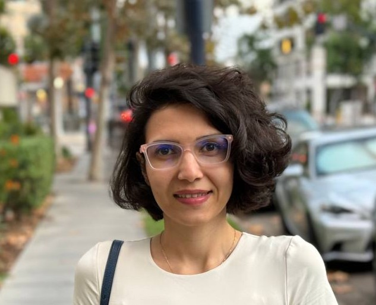

I am a Visiting Assistant Professor at Cal State Monterey Bay.
I received my PhD from University of Illinois Chicago in December 2024, under the guidance of Professor Yuheng Hu. My research designs and evaluates multi-agent large language model systems that combine specialized agents, reflection, and feedback to support complex human decision-making. I work across the full pipeline from instruction fine-tuning and RLHF to behavioral evaluation of how AI tools shape expert practice, with a focus on safe, trustworthy, and human-centered deployment in high-stakes domains.
My work has appeared in venues including ACM Transactions on Management Information Systems, the ACM International Conference on AI in Finance (ICAIF), the Association for Computational Linguistics (ACL), and PLoS ONE.
You can find more about my research here.